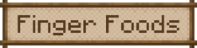

Food
"Important thing for a farming mod is.. of course, food."
Food Types
They are small portions of food, meant to be eaten out of the hand.
Some foods can be created in a crafting table, while others require a Cooking Pot.
They consist of salads, stews, and plated meals.
They can be created in a Cooking Pot (with the exception of salads).
Feasts are very large meals,
which can be placed as a block to provide multiple servings to players.
They consist of pies, cakes, cookies, and frozen treats.
They can be created in a crafting table and Cooking Pot.
They can be created in a Cooking Pot or crafted.
When fed to their associated mob, they will grant certain effects.
They can be created in a Cooking Pot.